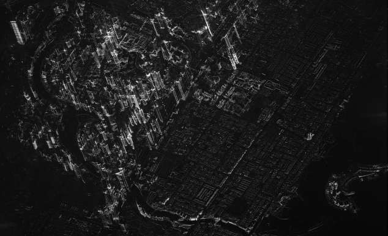
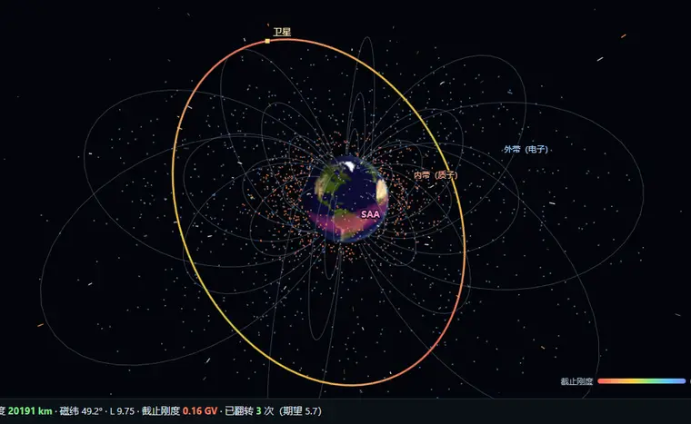
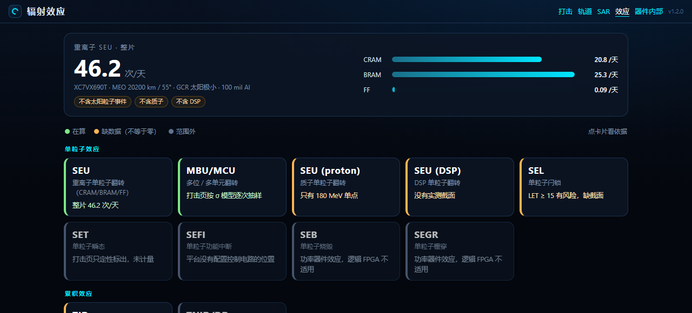
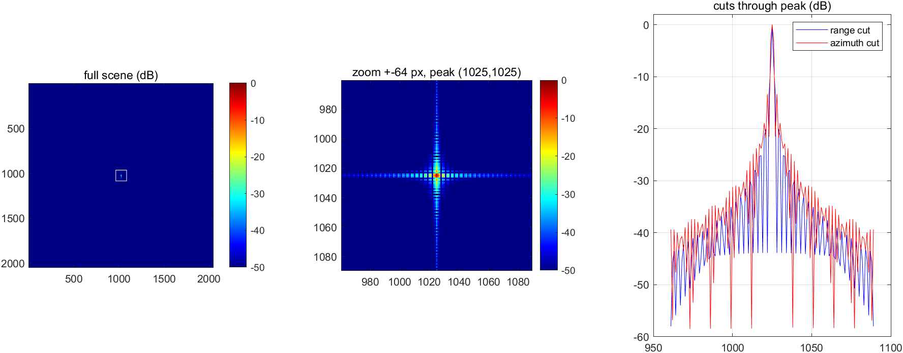
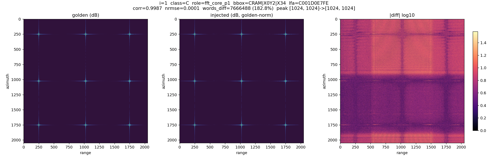

Chirp Scaling · 调频变标算法
在频域中通过相位补偿完成距离徙动校正与聚焦，适合围绕 FFT、复数乘法和外存调度组织规则的数据通路。
- 方位向 FFT：将回波变换到距离-多普勒域。
- Chirp Scaling 相位补偿：调整不同距离单元的徙动。
- 距离向 FFT、压缩与徙动补偿，再做距离向 IFFT。
- 方位压缩与残余相位补偿，方位向 IFFT 输出复图像。
当前参考平台：2048 × 2048 定点 CSA。成像参数、定点位宽与处理几何需要联合验证；不是任意任务参数的即插即用承诺。
FPGA BOARDS · ALGORITHM DEPLOYMENT · RADIATION RELIABILITY
为科研院所与企业提供 FPGA 板卡定制、信号处理算法上板部署与抗辐射可靠性评估。SAR 成像已在 Artix-7、Kintex-7、Virtex-7 平台完成上板实现。
板卡定制 · 算法上板 · 可靠性评估 · 按项目报价

星载大斜视 · NO-CFBP 聚焦
SERVICES / 服务
每个项目由开发者直接对接。
先梳理需求，再书面约定交付物与周期。
PRODUCT CENTER / 产品中心
从研究平台出发，围绕任务选型。
板卡配置、算法授权与交付范围逐项确认。
以上为现有工程配置，接口、存储与器件可按项目需求定制。
FIELD IMAGERY / 实测成像
星载与机载 SAR 实测数据成像，覆盖大斜视、聚束与 TOPS 扫描模式。
Smartsat-X1 于 2025 年 7 月 28 日获取的迪拜数据，经非正交笛卡尔快速反投影（NO-CFBP）算法聚焦。城市道路与建筑纹理清晰可辨。
Smartsat-X1 · Spaceborne · NO-CFBP

机载聚束模式实测成像，由实时统一聚焦算法（RT-UFA）处理。规则地物与线性结构清晰，保持原始灰度。
Airborne · Spotlight · RT-UFA

机载 Ku 波段渐进扫描地形观测（TOPS）模式实测成像，由 RT-UFA 处理，展示扫描模式下的大场景聚焦。
Airborne · Ku-band TOPS · RT-UFA
ALGORITHMS / 成像算法
成像算法与硬件、算子、测试分开展示。
在频域中通过相位补偿完成距离徙动校正与聚焦，适合围绕 FFT、复数乘法和外存调度组织规则的数据通路。
当前参考平台：2048 × 2048 定点 CSA。成像参数、定点位宽与处理几何需要联合验证；不是任意任务参数的即插即用承诺。
对每个成像像素按平台轨迹计算斜距，从距离压缩后的回波中取样并补偿相位，再沿合成孔径相干累加。
适合需要显式处理像素几何的研究，但计算量与访存量需评估。当前 BP 平台另有无保护、三模冗余和运行时检查变体；这些是可靠性配置，不是不同成像分辨率。
PRIMITIVES / 基本算子
计算核与完整算法分层展示。
RADIATION / 辐射效应仿真


五个视图覆盖从轨道到功能后果的建模链路。
轨道谱与屏蔽 → 器件翻转 → 功能后果
参考器件 Virtex-7 XC7VX690T。
仿真用于设计阶段评估，最终以束流试验为准。
VALIDATION / 独立验证案例
记录按输入规模和实现配置分别呈现。

Kintex-7 CSA 平台的 3 × 3 点目标成像。左侧查看目标分布，右侧放大中心点响应；用于检查聚焦形状与目标位置，不代表地物遥感影像。

单点目标的参考成像、峰值放大及距离/方位剖面。帮助理解二维脉冲响应，供板级结果核对峰位和形状；不是额外的硬件性能测试。

同一实验中的黄金输出、注入后输出与差值可视化。图像看起来接近时，差值仍可能存在；这只是一个个例，完整样本与判定规则见 SAR 数据手册。
三张图分别为板级输出、浮点参考与故障注入对比，输入均为仿真点目标回波。
DOWNLOAD CENTER / 资料下载
在线阅读、离线保存或核对汇总统计。
每份手册说明实验范围与来源。
成像参考配置、SEU 注入统计与判定规则。
阅读 / 下载手册 ↗Base-BP、TMR-BP 与 RA-BP 的实验汇总。
阅读 / 下载手册 ↗架构、接口与集成参考。
阅读 / 下载手册 ↗04 / 合作方式
直接与开发者沟通。
先明确需求，再定义交付。
应用场景、信号规模、接口与实验目标。
评估平台配置、算法适配与验证范围。
书面确认报价、周期、文档与支持内容。
按双方约定的测试用例完成集成与验收。
05 / 开启下一次探索
告诉我你正在解决什么问题。
我们一起找到合适的硬件与算法路径。
按需报价，不设在线支付。
所有配置与交付承诺以双方确认为准。